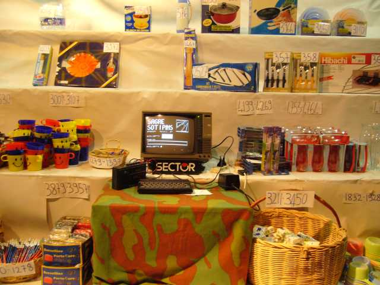
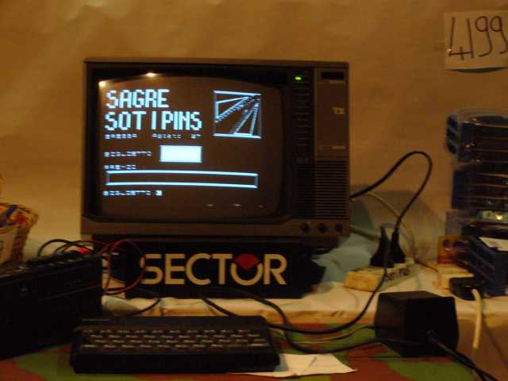

risorse | zx spectrum | pesca
Pesca è un programma realizzato per la gestione della pesca di beneficenza allestita durante i tradizionali festeggiamenti di ferragosto del mio paese. Ritoccato nel corso degli anni (l'ultima patch risale al 1997), ha fatto il suo dovere per ben 18 anni. Dal 2007 è stato sostituito da un ben meno pittoresco database Access.
Uno dei due ZX Spectrum in funzione nell'agosto del 2006:
 
Il programma, che fa uso di una procedura in linguaggio macchina per la visualizzazione dei caratteri a dimensioni maggiorate di cui non mi ricordo la provenienza, implementa una semplice ricerca binaria su due vettori numerici che contengono rispettivamente il numero di inizio e fine serie delle classi di premi previsti. Un terzo vettore alfanumerico contiene le descrizioni dei premi. Le matrici contenenti l'archivio sono salvate come file separati in coda al programma.
Scarica il nastro virtuale pesca.tzx (23KB).
900 REM ******************
910 REM * *
1000 REM * GESTIONE PESCA *
1010 REM * *
1020 REM ******************
1030 REM
1040 REM
1050 REM
1060 CLEAR 59999: LET NMAX=5000
1070 LET GRUPPIMAX=300
1080 DIM I(GRUPPIMAX)
1085 DIM F(GRUPPIMAX)
1090 DIM D$(GRUPPIMAX,30)
1095 LET INIZIO=1: LET FINE=0
1098 POKE 23658,8
1099 PRINT "CARICAMENTO L.M. "; FLASH 1;"{-6}": LOAD ""CODE 60000
1100 REM
1110 REM
1120 REM
1130 REM ***********
1140 REM * *
1150 REM * MENU' *
1160 REM * *
1170 REM ***********
1180 REM
1190 REM
1200 REM
1210 BORDER 0: PAPER 0: INK 7: BRIGHT 1: CLS : POKE 23624,71
1220 PRINT AT 3,3;"+-------------------------+"
1230 PRINT AT 4,3;"| |"
1240 PRINT AT 5,3;"| 1.. CREAZIONE ED | | AGGIORNAMENTO |"
1250 PRINT AT 7,3;"| |"
1260 PRINT AT 8,3;"| 2.. CARICAMENTO |"
1270 PRINT AT 9,3;"| |"
1280 PRINT AT 10,3;"| 3.. MODIFICA |"
1290 PRINT AT 11,3;"| |"
1300 PRINT AT 12,3;"| 4.. MODO RICERCA |"
1310 PRINT AT 13,3;"| |"
1320 PRINT AT 14,3;"| 5.. FINE SESSIONE |"
1330 PRINT AT 15,3;"| |"
1340 PRINT AT 16,3;"+-------------------------+"
1350 PRINT AT 20,1;"FAI LA TUA SCELTA [1..5]"
1360 LET A$=INKEY$
1370 IF A$="" THEN GO TO 1360
1380 IF A$<"1" OR A$>"5" THEN GO TO 1360
1390 PRINT #0;AT 0,0;"MI AUGURO SIA QUELLA GIUSTA....": FOR F=1 TO 100: NEXT F
1400 CLS : GO TO (VAL A$+1)*1000
1990 REM
2000 REM #################
2010 REM # #
2030 REM # CREAZIONE E #
2040 REM # AGGIORNAMENTO #
2050 REM # #
2060 REM #################
2070 REM
2080 PRINT INVERSE 1,," CREAZIONE ED AGGIORNAMENTO ",,
2090 PRINT AT 5,0;"VUOI "; INVERSE 1;"C"; INVERSE 0;"REARE OD "; INVERSE 1;"A"; INVERSE 0;"GGIORNARE ?"
2100 LET A$=INKEY$
2110 IF A$="" THEN GO TO 2100
2120 IF (A$="C" OR A$="c") THEN LET IND=1: LET I(1)=1: GO TO 2270
2130 REM
2140 REM
2150 PRINT AT 7,0;"* AGGIORNAMENTO ELENCO *"
2151 PRINT AT 9,0;"PROVENIENZA DELL'ELENCO:"' INVERSE 1;"1"; INVERSE 0;"-NASTRO"' INVERSE 1;"0"; INVERSE 0;"-MEMORIA"
2153 LET A$=INKEY$
2155 IF A$="1" THEN GO TO 2160
2157 IF A$="0" THEN GO TO 2230
2159 GO TO 2153
2160 PRINT AT 9,0;"INSERISCI IL NASTRO CONTENENTE"'"L'ELENCO DA AMPLIARE E PREMI"'"UN TASTO QUALUNQUE"
2170 IF INKEY$<>"" THEN GO TO 2170
2180 IF INKEY$= "" THEN GO TO 2180
2190 PRINT FLASH 1;AT 13,0;"CARICAMENTO ELENCO";AT 14,0;" IN CORSO "
2200 LOAD "" DATA I()
2205 LOAD "" DATA F()
2210 LOAD "" DATA D$()
2220 PRINT INVERSE 1;AT 13,0;"CARICAMENTO ELENCO";AT 14,0;" ESEGUITO "
2230 LET IND=1: PRINT FLASH 1;AT 21,31;"{-6}"
2240 IF F(IND)>0 THEN LET IND=IND+1: GO TO 2240
2245 PRINT AT 21,31;" ": LET I(IND)=F(IND-1)+1
2250 REM
2260 REM
2270 CLS : PRINT AT 0,0;"GRUPPO N. :";IND
2280 PRINT AT 3,0;"INIZIO SERIE :";I(IND)
2290 PRINT AT 5,0;" FINE SERIE :";
2300 INPUT LINE F$
2310 IF LEN F$=0 THEN GO TO 2300
2320 LET X=1
2325 IF F$(X)<"0" OR F$(X)>"9" THEN GO TO 2300
2330 LET X=X+1: IF X<=LEN F$ THEN GO TO 2325
2340 LET F=VAL F$
2345 IF F=0 THEN LET F(IND)=0: GO TO 2530
2350 IF F>NMAX OR F< I(IND) THEN GO TO 2300
2360 LET F(IND)=F
2380 LET I(IND+1)=F(IND)+1
2390 PRINT F
2400 PRINT AT 7,0;"DESCRIZIONE ARTICOLO:";AT 9,0;
2405 DIM Z$(30)
2410 INPUT LINE Z$
2420 IF LEN Z$=0 THEN GO TO 2410
2440 PRINT Z$
2450 LET D$(IND)=Z$
2460 PRINT #0;AT 0,0;"TUTTO A POSTO ? [S/N]"
2470 LET A$=INKEY$
2480 IF A$="" THEN GO TO 2470
2486 IF CODE (A$)=13 THEN GO TO 2470
2490 IF A$="S" OR A$="s" THEN LET IND=IND+1
2500 GO TO 2270
2510 REM
2520 REM
2530 CLS : PRINT INVERSE 1,," CREAZIONE ED AGGIORNAMENTO ",,
2540 PRINT AT 5,0;"PRIMA DI USCIRE DA QUESTO"'"AMBIENTE, VUOI SALVARE IL"'"NUOVO ELENCO [S/N] ?"
2550 LET A$=INKEY$
2560 IF A$="" THEN GO TO 2550
2565 IF CODE A$=13 THEN GO TO 2550
2570 IF A$<>"S" AND A$<>"s" THEN GO TO 1200
2580 PRINT FLASH 1;AT 9,0; " REGISTRAZIONE ";AT 10,0;" IN CORSO "
2590 SAVE "ELENCO.I" DATA I()
2600 SAVE "ELENCO.F" DATA F()
2610 SAVE "ELENCO.D" DATA D$()
2620 PRINT INVERSE 1;AT 9,0; " REGISTRAZIONE ";AT 10,0;" ESEGUITA "
2630 PRINT AT 12,0;"VUOI FARE LA VERIFICA [S/N] ?"
2640 LET A$=INKEY$
2650 IF A$="" THEN GO TO 2640
2660 IF CODE A$=13 THEN GO TO 2640
2670 IF A$<>"S" AND A$<>"s" THEN GO TO 1200
2770 PRINT AT 14,0;"---> PRONTO PER LA VERIFICA"
2780 VERIFY "" DATA I()
2790 VERIFY "" DATA F()
2800 VERIFY "" DATA D$()
2810 PRINT AT 16,0;"VERIFICA O.K."
2820 PAUSE 0: GO TO 1200
2990 REM
3000 REM ###############
3010 REM # #
3020 REM # CARICAMENTO #
3030 REM # #
3040 REM ###############
3050 REM
3060 REM
3070 PRINT INVERSE 1,," CARICAMENTO ARCHIVIO ",,
3080 PRINT FLASH 1;AT 5,7;"CARICAMENTO";AT 6,7;" IN CORSO "
3090 PRINT AT 8,0;
3100 LOAD "" DATA I()
3110 LOAD "" DATA F()
3120 LOAD "" DATA D$()
3130 PRINT INVERSE 1;AT 5,7;"CARICAMENTO";AT 6,7; " ESEGUITO "
3140 PRINT #0;AT 0,0; FLASH 1;"PREMI UN TASTO.."
3150 PAUSE 0
3160 GO TO 1200
3170 REM
4000 REM ############
4010 REM # #
4020 REM # MODIFICA #
4030 REM # #
4040 REM ############
4050 REM
4055 LET PAGINA=1: LET UP=0: LET MOD=0
4060 CLS : PRINT "N. IN. FINE ARTICOLO"
4065 PRINT "--------------------------------"
4067 PRINT
4070 FOR R=1 TO 15
4080 LET IND=(PAGINA-1)*15+R
4085 IF F(IND)=0 THEN LET UP=1: GO TO 4110
4090 PRINT IND;TAB 4;I(IND);TAB 9;F(IND);TAB 14;D$(IND)( TO 15)
4100 NEXT R
4110 PRINT AT 20,0;"A-AVANTI E-MENU M-MODIFICA"'"I-INSERISCI C-CANCELLA"
4120 LET A$=INKEY$
4130 IF A$="" THEN GO TO 4120
4140 IF A$="E" OR A$="e" THEN GO TO 4900
4150 IF A$<>"A" AND A$<>"a" THEN GO TO 4180
4160 IF UP=1 THEN GO TO 4900
4170 LET PAGINA=PAGINA+1: GO TO 4060
4180 LET MOD=1: IF A$<>"M" AND A$<>"m" THEN GO TO 4450
4190 PRINT AT 20,0,,,,
4200 INPUT "MODIFICA GRUPPO N. ";G
4210 IF (G<(PAGINA-1)*15+1) OR (G> IND-UP) THEN GO TO 4200
4220 CLS : PRINT INVERSE 1;AT 0,0;" ";AT 1,0;" MODIFICA ";AT 2,0;" "
4225 PRINT AT 5,0;"GRUPPO N. : ";G
4230 PRINT AT 7,0;"INIZIO SERIE : ";I(G)
4240 PRINT AT 9,0;" FINE SERIE : ";
4250 INPUT LINE F$
4260 IF F$="" THEN LET F= F(G): GO TO 4310
4270 LET F=VAL F$
4280 IF F < I(G) THEN GO TO 4250
4290 IF F > NMAX THEN GO TO 4250
4292 LET DIF=F-F(G)
4300 LET F(G)= F
4301 LET X=G+1
4304 IF F(X)<>0 THEN LET I(X)=I(X)+DIF: LET F(X)=F(X)+ DIF: LET X=X+1: GO TO 4304
4310 PRINT F
4320 PRINT AT 11,0;"NOME PREMIO : "
4330 INPUT LINE P$
4340 IF P$="" THEN GO TO 4360
4350 LET D$(G)=P$
4360 PRINT 'D$(G)
4370 PRINT AT 20,0;"TUTTO OK [S/N] ?"
4380 LET A$=INKEY$
4390 IF A$="" THEN GO TO 4380
4400 IF A$="N" OR A$="n" THEN GO TO 4220
4410 IF A$="S" OR A$="s" THEN GO TO 4060
4420 GO TO 4380
4430 REM
4440 REM
4450 IF A$<>"C" AND A$<>"c" THEN GO TO 4580
4460 INPUT "GRUPPO DA CANCELLARE : ";G
4470 IF (G<(PAGINA-1)*15+1) OR (G> IND-UP) THEN GO TO 4460
4480 LET DIF=F(G)-I(G)+1
4490 PRINT AT 0,31; FLASH 1;"{-6}": LET X=G
4500 LET I(X)=I(X+1)-DIF
4510 LET F(X)=F(X+1)-DIF
4520 LET D$(X)=D$(X+1)
4530 LET X=X+1
4540 IF F(X+1)<>0 THEN GO TO 4500
4550 PRINT AT 0,31;" ": LET F(X)=0: GO TO 4060
4560 REM
4570 REM
4580 IF A$<>"I" AND A$<>"i" THEN GO TO 4060
4590 INPUT "INSERIRE DOPO IL GRUPPO : ";G
4600 IF (G<(PAGINA-1)*15+1) OR (G> IND-UP) THEN GO TO 4590
4610 PRINT AT 0,31; FLASH 1;"{-6}": LET X=G
4620 IF F(X)<>0 THEN LET X=X+1: GO TO 4620
4630 IF X>G THEN LET I(X)=I(X-1): LET F(X)=F(X-1): LET D$(X)=D$(X-1): LET X=X-1: GO TO 4630
4640 CLS : PRINT INVERSE 1;AT 0,0;" ";AT 1,0;" INSERIMENTO ";AT 2,0;" "
4650 PRINT ''"GRUPPO N. : ";G+1
4660 LET I(G+1)=F(G)+1
4670 PRINT ''"INIZIO SERIE : ";I(G+1)
4680 PRINT ''" FINE SERIE : ";
4690 INPUT F
4700 IF F < I(G+1) OR F > NMAX THEN GO TO 4690
4710 PRINT F: LET F(G+1)=F
4720 LET DIF=F(G+1)-I(G+1)+1
4730 PRINT AT 0,31; FLASH 1;"{-6}": LET X=G+2
4740 IF F(X)<>0 THEN LET I(X)=I(X)+DIF: LET F(X)=F(X)+DIF: LET X=X+1: GO TO 4740
4790 PRINT AT 0,31;" ": PRINT AT 14,0;"NOME PREMIO : "
4800 INPUT LINE D$(G+1): IF D$(G+1)="" THEN GO TO 4800
4810 GO TO 4060
4900 IF MOD=0 THEN GO TO 1200
4910 CLS : PRINT "ATTENZIONE!!"
4920 PRINT "------------"''
4930 PRINT "L'ELENCO E' STATO MODIFICATO."
4940 PRINT "VUOI SCARICARLO SUL NASTRO [S/N]"
4950 LET A$=INKEY$
4960 IF A$="" THEN GO TO 4950
4970 IF A$="S" OR A$="s" THEN CLS : GO TO 2580
4975 GO TO 1200
4990 REM
5000 REM ###########
5010 REM # #
5030 REM # RICERCA #
5040 REM # #
5050 REM ###########
5060 REM
5061 PRINT "{+6}{-2}{-4}{-3}{+7}{+6}{-6}{-5}{-3}{+7}{+4}{-3}"
5062 PRINT "{-6}{+7}{-5} {+5}{+5} {-5} {+5}{+5} "
5063 PRINT " {-5}{-5}{-3}{+5}{+5}{-7}{-5}{-3}{+7}{+4}{-2}"
5064 PRINT "{-6}{+6}{-5} {+5}{-6}{+6}{-5} {+5}{+1}{+3}"
5065 PRINT
5066 PRINT "{+6}{-2}{-4}{-3}{+7}{-3}{+4}{-2} {+5} {+4}{-6}{-5}{-5} {+5}{+6}{-2}"
5067 PRINT "{-6}{+7}{-5} {+5} {+5} {+5} {+5}{-5}{-5}{-5}{-6}{+5}{-6}{+7}"
5068 PRINT " {-5}{-5} {+5} {+5} {+5} {+4}{-2}{-5}{-5} {+5} {-5}"
5069 PRINT "{-6}{+6}{-1}{+3}{-2} {+5} {+5} {+5} {-5}{-5} {+5}{-6}{+6}"
5070 PRINT '"BRESSA, Agosto '97"
5071 PLOT 175,95: DRAW 80,0: DRAW 0,80: DRAW -80,0: DRAW 0,-80
5072 PLOT 201,97: DRAW 52,0: DRAW 0,70: DRAW -52,-70: PLOT 177,119: DRAW 0,54: DRAW 68,0: DRAW -68,-54
5073 PLOT 177,117: DRAW 40,32: DRAW 8,4: DRAW -10,-8: DRAW 2,-1: DRAW 13,10: DRAW 15,11
5074 PLOT 177,97: DRAW 22,0: DRAW 29,40: DRAW 4,8: DRAW -8,-10: DRAW -1,2: DRAW 10,13: DRAW 12,15
5075 PLOT 209,99: DRAW 30,0: DRAW 12,60: DRAW -42,-60: PLOT 210,100: DRAW 28,0: DRAW 12,57: DRAW -39,-57
5076 PLOT 179,125: DRAW 0,30: DRAW 55,13: DRAW -55,-43: PLOT 180,126: DRAW 0,28: DRAW 53,14: DRAW -53,-41
5078 PRINT AT 14,0;"BIGLIETTO"
5079 PRINT AT 17,0;"PREMIO : "
5080 PLOT 86,46: DRAW 67,0: DRAW 0,27: DRAW -67,0: DRAW 0,-27
5083 PLOT 6,6: DRAW 243,0: DRAW 0,20: DRAW -243,0: DRAW 0,-20
5084 PLOT 4,4: DRAW 247,0: DRAW 0,24: DRAW -247,0: DRAW 0,-24
5085 PRINT PAPER 7; INK 0;AT 13,11;" ";AT 14,11;" ";AT 15,11;" "
5086 PRINT PAPER 0; INK 7; BRIGHT 1;AT 19,1;" ";AT 20,1;" "
5088 IF FINE>0 THEN GO TO 5100
5089 LET FINE=1
5090 IF F(FINE+1)>0 THEN LET FINE=FINE+1: GO TO 5090
5100 INPUT "BIGLIETTO:";LINE B$
5110 IF LEN B$=0 THEN GO TO 5100
5120 LET X=1
5130 IF B$(X)<"0" OR B$(X)>"9" THEN GO TO 5100
5140 LET X=X+1: IF X<=LEN B$ THEN GO TO 5130
5150 LET B=VAL B$
5160 IF B=0 THEN GO TO 1200
5170 IF B>NMAX THEN GO TO 5100
5180 LET J=INIZIO: LET K=FINE
5190 LET Y=INT ((J+K)/2)
5200 IF B > F(Y) THEN LET J=Y+1: GO TO 5190
5210 IF B < I(Y) THEN LET K=Y-1: GO TO 5190
5211 POKE 60190,120: POKE 60194,104: POKE 60195,2: POKE 60196,3: POKE 60193,120-8*LEN B$
5212 FOR L=1 TO LEN B$
5214 POKE 60004,CODE (B$(L))
5218 RANDOMIZE USR 60000: NEXT L
5220 POKE 60190,71: POKE 60194,151: POKE 60195,1: POKE 60196,2: POKE 60193,8
5222 FOR L=1 TO 30
5224 POKE 60004,CODE D$(Y,L): RANDOMIZE USR 60000
5226 NEXT L
5230 PAUSE 0
5240 GO TO 5085
5920 REM
5930 REM ##########
5940 REM # #
5950 REM # USCITA #
5960 REM # #
5970 REM ##########
5980 REM
5990 REM
6000 CLS : PRINT "ORA SEI IN "; INVERSE 1;"BASIC"; INVERSE 0;"."'"SE VUOI RITORNARE AL PROGRAMMA"'"NON DARE <RUN> MA <GOTO 1200> "
6010 STOP
Pagina modificata l'8/11/2011